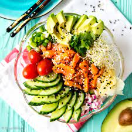

Poke Bowl recipe

Description
A poke bowl is a Hawaiian dish that is deeply rooted in Japanese cuisine. Poke means "cut into pieces" and
refers to the slices or cubes of raw fish that are served in a bowl along with rice, dressing, vegetables
and seasonings.
Ingredients
- 4 cups cooked rice
- 4 tablespoons soy sauce
- 4 teaspoons rice vinegar
- 4 teaspoons sesame oil
- ¼ teaspoon chile oil (Optional)
- ¾ pound sashimi-grade salmon, cut into small cubes
- 1 avocado, sliced, or to taste
- 1 red bell pepper, sliced, or more to taste
- 4 sheets dried seaweed, cut into strips, or to taste
- 1 tablespoon pickled ginger, or to taste
- 1 tablespoon furikake (Japanese nori seasoning), or to taste
- 2 tablespoons chopped green onion, or to taste
- 1 tablespoon sesame seeds, or to taste
Steps
- Step 1
- Divide rice among 4 bowls.
- Step 2
- Mix soy sauce, rice vinegar, sesame oil, and chile oil in a bowl to make dressing. Mix salmon with
the dressing. Divide among the 4 bowls.
- Step 3
- Top bowls with avocado, red bell pepper, edamame, seaweed, pickled ginger, and furikake
seasoning. Garnish with chopped green onion a sprinkling of sesame seeds.